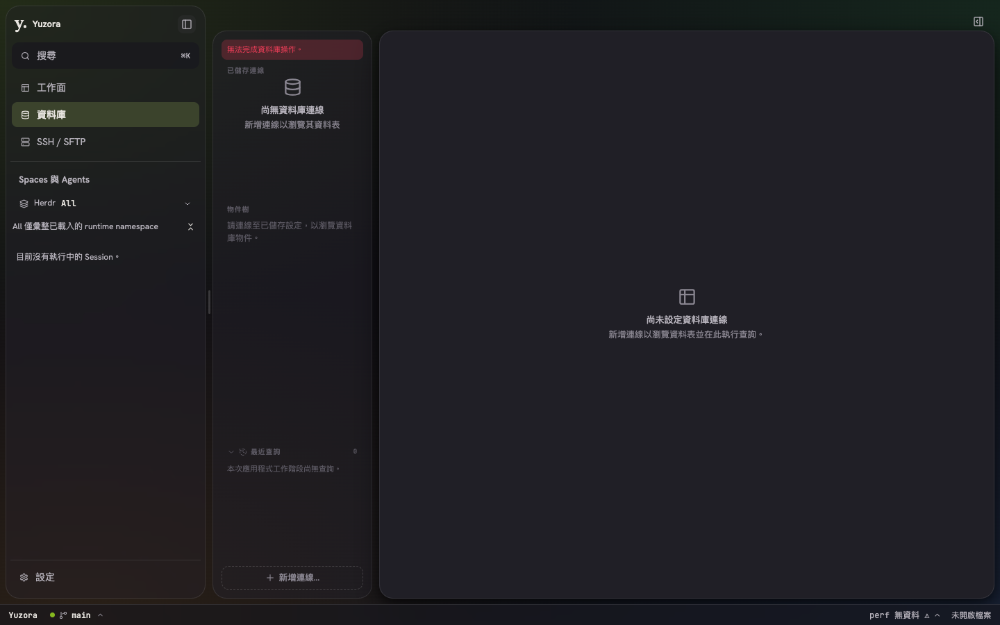
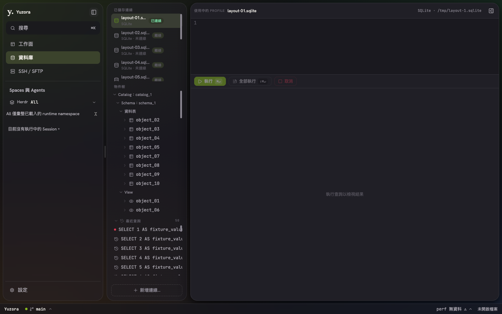
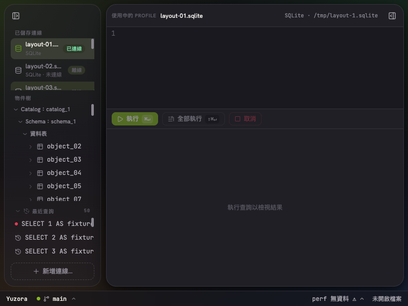

2026-09-09。切換資料庫後，主內容頂端現維持在 8px；原本會下移至 44px，產生 36px 的整列空白。
AppShell 在資料庫模式隱藏右側工具欄，進而啟用 data-utility-row，為側欄按鈕加入 36px 上方 padding。移除資料庫模式的整列預留，改由既有連線標頭容納右側按鈕：標頭高 44px、右方預留 40px。左側收合時僅在資料庫導覽內預留按鈕空間，macOS 視窗控制鈕另保留高度。
修改限於 src/app/AppShell.tsx、src/app/panels/DatabasePanel.tsx、src/app/workbench/workbench-shell.css。沿用既有元件，未新增 UI primitive。
bun run test src/app/AppShell.layout.test.tsx src/app/appShell.test.tsx src/app/panels/databasePanel.test.tsx：75 個測試通過。bun run build：typecheck 與 build 通過；既有 chunk size、dynamic import 警告仍在。git diff --check 通過。

